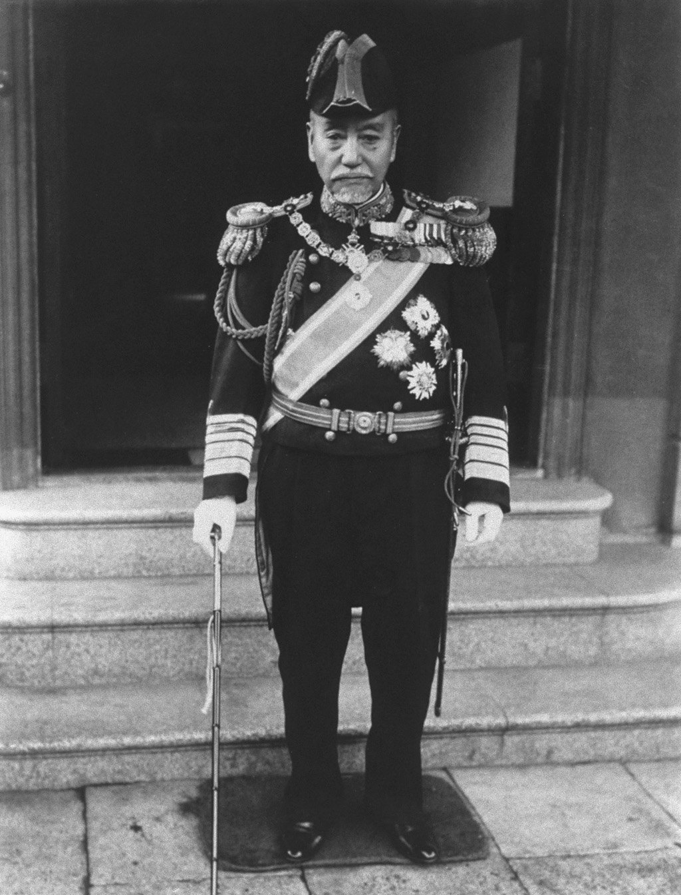
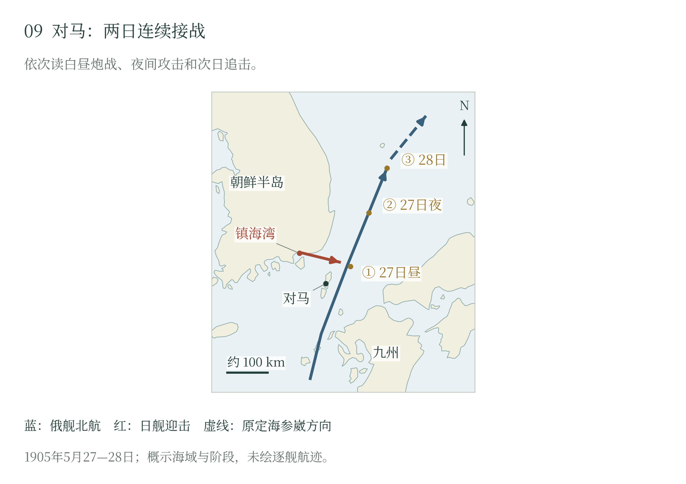

第八章 海上控制与舰队决战
大陆战争的海上条件
日本陆军推进到奉天时，补充人员、马匹、炮弹和粮食仍要从本土装船，经过朝鲜周边海域，再由港口转入铁路与道路。海军承担三项彼此争夺资源的任务：保护运输，限制俄国远东舰队集中，保存主力迎击来自欧洲的增援。军舰的数量、维修和补煤时间，决定这三项任务能够怎样兼顾。〔1〕

俄国旅顺战列舰队威胁黄海和辽东附近海运，符拉迪沃斯托克巡洋舰则进入日本海袭击运输。分处两地的力量使日本需要分兵，也使俄方难以相互支援。留在基地可以修理、依托岸防，出海集中才可能改变双方对比；支援陆上要塞又会把水兵和火炮留在岸上。舰队的部署始终包含这些不同用途之间的取舍。〔2〕
开战时，东乡平八郎一面攻击旅顺，一面分兵护送部队登陆仁川。夜袭击伤俄舰以后，日方仍须长期警戒封锁。二月至五月三次沉船堵港试图封住出口，俄舰却继续能够出动。日本遂靠侦察、巡逻和主力截击维持控制，供应船、本土基地与前进据点支撑舰艇轮换。〔3〕
近岸封锁还受到水雷威胁。四月十三日，俄国旗舰“彼得罗巴甫洛夫斯克”号触雷沉没，马卡罗夫阵亡；五月十五日，日本又损失“初濑”“八岛”两艘战列舰。水雷使较弱一方也能重创大型军舰，迫使封锁舰队在接近港口、保持观察与保存主力之间调整距离。日本保有主动，同时持续消耗迎击下一支俄舰队所需的资源。〔4〕
破交战与中立国
符拉迪沃斯托克巡洋舰队以较少舰只打击日本运输。六月十五日，“常陆丸”“和泉丸”被击沉，“佐渡丸”受损；七月俄舰又穿过津轻海峡，到日本东岸活动。人员与装备损失之外，袭击还迫使运输改道、延误或增加护航。日本由上村彦之丞率装甲巡洋舰追捕，旅顺方向的主力因而需要与日本海方面分担舰艇资源。〔5〕
破交范围扩大以后，中立国商船及货物也进入争夺。俄舰扣留装载铁路和军事物资的船舶，必须判断货物性质，并处理押送、补给和船旗国交涉。英国“马六甲”号被截获后，英国政府说明所载军用品属于英国方面，交涉促成放船，相关俄国辅助巡洋舰停止了该轮搜索扣押。远洋袭扰的收益，由此受到国际关系的实际约束。〔6〕
旅顺港内的舰队面对另一种压力。随着第三军接近，八月九日炮弹已击中俄舰。向海参崴转移可以保存重舰、增加日本海方向力量，留港则有继续受陆上炮击的风险。维特盖夫特遂于公历八月十日、俄历七月二十八日率舰队出海，尝试通过日本主力拦截。〔7〕
黄海与蔚山的分散后果
黄海交战在航行中展开。俄舰试图继续向东，日本舰队追击并争取前方位置。黄昏前后，维特盖夫特阵亡，旗舰“皇太子”号操纵受损后突然转向，各舰对旗舰动作的理解与自身避战、救援选择交织，队形失去统一。原定的集中转移，分解成返港和分散航行。〔8〕
战后，五艘战列舰及部分舰只返回旅顺，“皇太子”号进入胶州湾，其他巡洋舰分赴上海、西贡等中立港。“诺维克”号继续绕行，最后在萨哈林附近退出战斗。返港的舰只再受围城炮火威胁，进中立港的须接受解除武装等限制，独自航行的又缺少基地与支援。俄国保住了若干军舰，原来那支可以共同出动的舰队却已分散。 〔8〕
四天后，符拉迪沃斯托克三艘装甲巡洋舰在蔚山外海遭遇上村舰队。“留里克”号操纵受创，“俄罗斯”“雷霆”两舰回头掩护，使自己也持续暴露在炮火下；最终两舰向北脱离，“留里克”号沉没。日军救起幸存者，两艘俄舰返回海参崴修理。日本海方向的破交力量因而受到重创。〔9〕
两次海战共同削弱了俄军重新集中的机会，日本获得较大的运输余地。年底，旅顺港内重舰又在攻城炮击中逐步失能；203高地的取得改善了校射，外锚地舰艇则经历另一组鱼雷攻击和自沉。东乡于是能够把主力撤回整备，留下较小力量监视旅顺，准备迎击从欧洲赶来的舰队。〔10〕
远航舰队的任务变化
罗杰斯特文斯基率第二太平洋舰队东航，同行的除战列舰、巡洋舰和驱逐舰，还有修理、运输和运煤船。重舰绕好望角，部分船舶经苏伊士运河，随后会合并接收增援。快慢不一、续航力各异的船只要一同前进，补煤、检修、等待和重新编队便贯穿航程。舰队尚未见到敌人，先要维持自身的秩序和航行能力。 〔11〕
国际环境影响航程。多格尔沙洲事件中，俄舰把可疑目标当作鱼雷艇开火，英国渔船受击。国际调查委员会一致认定渔船没有敌对行动，多数委员否认现场有俄方所称鱼雷艇，并把开火责任归于罗杰斯特文斯基；俄国委员保留异议。事件迫使俄国以外交方式处理远航造成的额外危机。〔12〕
舰队抵达东亚以前，旅顺已投降，奉天会战也已结束。原来与旅顺舰队策应的设想失去基础，海参崴成为重要目的地。俄舰在法国殖民地金兰湾附近停留，又引发日本抗议，补给和等待也受中立规则制约。欧洲调来的海军力量须先成功突破，才能转化为对日本运输和战局的持续威胁。〔13〕
东乡把辅助巡洋舰、巡洋舰与主力分层配置，用外层搜索引导重舰集中。前进基地支持补煤修理，巡逻舰承担保持接触和传递航向的任务。日本以对海区和后方较熟悉的组织，对抗一支长途航行而来、仍须继续北进的舰队。〔14〕
对马的连续打击
1905年5月27日，即俄历5月14日，俄舰队进入朝鲜海峡东水道。“信浓丸”的无线电报告提供来向，其他日舰继续跟踪。发现目标之后，侦察舰还要在雾气、航向变化和驱赶下维持接触，使主力可以依据更新后的情报迎击。无线电与舰艇协同，把广阔海面的搜索转成了集中的交战。〔15〕
下午，日本主力以转向和较高航速争取前方位置，集中攻击俄军领舰和旗舰。东乡报告强调射击前部，俄方恩克维斯特报告也记述，俄舰每次试图北行，日舰便抢向前面攻击领头战舰。前舰受创使后续舰艇更难保持航向与队形，机动优势与集中火力相互加强。〔16〕
俄军还须保护运输船和受损舰。巡洋舰掩护后部，战列舰回护受创旗舰，救援与继续北航的要求发生冲突。罗杰斯特文斯基负伤后转移到驱逐舰，指挥继承发生在舰艇分散、信号受损的环境中。炮击损坏舰体和人员，也逐步削弱整个编队共同执行命令的能力。〔17〕
日方也曾在烟雾中失去目标，并有舰艇离列修理；重新接敌以后，攻击继续。夜间由驱逐舰和鱼雷艇接替，迫使俄舰进一步分散，日本主力则向预定地域会集，次日再搜索、围攻残部。对马的决定性效果由白昼炮战、夜间攻击与翌日收束接续形成。〔18〕
五月二十八日，涅博加托夫所率一组舰只投降。其他俄舰分别沉没、自沉、被俘，恩克维斯特带三艘巡洋舰前往马尼拉后被拘留，少量舰艇抵达海参崴。俄国从欧洲投入的重舰集团失去整体作战能力，日本则保有支持运输、封锁与新登陆的主力。〔19〕
人员损失方面，1907 年美国编纂史所录日方数字为阵亡一百一十六、负伤五百三十八，注明为日本报告数、属早期记录；俄方舰艇的结局分为沉没、自沉、被俘与中立港扣留，未在同一张表内统一。数字不大，却说明对马不是一次等量齐观的舰队决战，而是一方在航路、队形与指挥连续受损后失去整体作战能力。
对马以后，俄国已无力凭这支远航舰队扭转海上局势。日本保有的主力可以支援新的登陆，萨哈林因而进入实际可取的目标之列。俄国满洲陆军仍在，日本若要继续作战，也仍须支付兵员和军费。接下来的交涉，便要为这些胜利、残存力量和继续战争的代价定出一个双方能够接受的价码。

俄舰队经对马东侧北航，日本以侦察引导主力迎击。五月二十七日白昼炮战、夜间鱼雷攻击和二十八日追击接续发生，舰队指挥与队形逐步瓦解，残舰形成多种结局。 本页采用文字校订版。
随文简图 · 自然地理底图：Natural Earth；历史依据见本章注及大图9逐图来源。大图9（图册第9页）